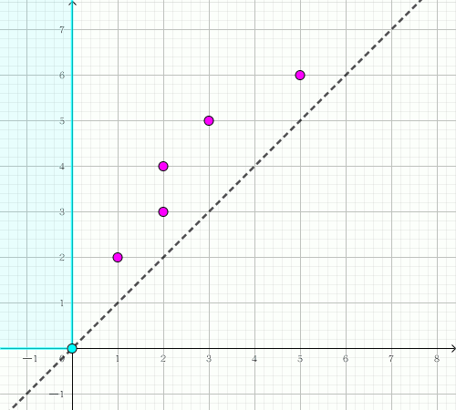
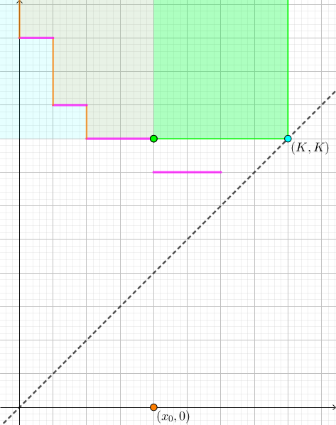

班里有 $N$ 个学生，他们的编号是 $0$ 到 $N-1$。每天，老师都有一些项目需要学生去完成。每个项目都需要由一组学生在一天内完成。项目的难度可能不同。对于每个项目，老师知道该由多少学生组成的小组去完成。
不同的学生对小组的规模有不同的喜好。更准确的说，对学生 $i$ 而言，他只愿意待在人数在 $\left[ A_i, B_i \right]$ 内的小组工作。每一天，一个学生最多被分配到一个小组。有些学生可能不被分配到任何一个小组里。每个小组只负责一个项目。
老师已经选择好接下来 $Q$ 天每一天的项目。对于每一天，现需要判断是否有一种分配学生的方案，使得每个项目都有一个小组负责。
给定对所有学生的描述：$N$, $A$ 以及 $B$，同时也给定 $Q$ 个问题的序列 —— 每天一个问题。每个问题包含当天要完成的 $M$ 个项目，同时含有一个长度为 $M$ 的序列 $K$，$K[i]$ 表示项目 $i$ 所需要的小组人数。对于每个问题，你的程序需要返回是否存在一种小组分配的方案，可以完成当天的所有项目。
你需要实现两个函数，他们分别是 $\mathrm{init}$ 和 $\mathrm{can}$:
先对原问题建模。我们将每个学生看作二维平面上区域 $R$ 中的一个点 $\left( A_i, B_i \right)$，其中 $R = \left\{ (x, y) \mid y \geq x > 0 \right\}$。
那么对于一个人数为 $K$ 的小组，它所包含的点需要满足 $A_i \leq K \leq B_i$，即满足 $A_i \leq K \wedge B_i \geq k$ 的无限矩形区域，如下图所示：
于是，对于每组询问，我们就需要用若干个这样的矩形去覆盖给定的 $n$ 个点，需要满足每个点至多被覆盖一次，且对于 $K$ 人小组，这个矩形为 $\left\{ (x, y) \mid x \leq K, y \geq K \right\}$，需要覆盖恰好 $K$ 个点。
不妨假设 $K_1 \leq K_2 \leq \cdots K_m$，那么这些矩形就是一个 "从低到高，从瘦长到扁平" 的这种趋势 (具体可参见动画)。我们考虑贪心地去覆盖点。
如果某一次轮到某个矩形覆盖，发现剩余的点数少于 $K$，那么显然可以得到无解。
否则说明这个矩形中有至少 $K$ 个点。那具体选哪 $K$ 个点呢？
答案是，选纵坐标最小的 $K$ 个点。由于 $K_i$ 单调递增，因此后面的矩形的 "底边" 会逐渐升高，因此纵坐标越小的点会越早失去覆盖机会，而纵坐标稍大的点会有更长的保留时间。
因此我们就得到了一个算法：从小到大枚举 $K_i$，然后判断当前矩形内部未覆盖的点的个数是否 $\geq K$，如果 $< K$，则为无解，否则，我们取纵坐标最小的 $K$ 个点 (纵坐标前 $K$ 小的点，如有多个可以任取)，用这个矩形将其覆盖 (，然后考虑下一个矩形)。
接下来讲一下具体实现。
首先可以注意到一个性质：在任意时刻，横坐标为 $i$ 的点中，被覆盖的点的纵坐标一定是一个连续的区间 (或者说一个 "前缀")，令 $h_i$ 表示横坐标为 $i$ 的点的 "覆盖高度"，即满足 $y \leq h_i$ 的点均被覆盖，$y > h_i$ 的点均未覆盖，则有 $h_i$ 单调不增。
反之，设 $i < j \wedge h_i < h_j$，则将横坐标为 $j$ 且纵坐标在 $\left( h_i, h_j \right]$ 之间的点改为覆盖横坐标为 $i$，纵坐标 $> h_i$ 的点，答案不变劣。
于是我们可以用一个单调 (递减) 栈维护每个点的 "覆盖高度"，插入一个右下角坐标为 $(K, K)$ 的矩形后，将覆盖高度小于 $K$ 的横坐标扔掉 (因为这些点可以看作是 "全新" 的)，设栈顶的横坐标为 $x_0$。
然后统计出横坐标在 $\left( x_0, K \right]$，纵坐标 $\geq K$ 的点的个数 (绿色区域)，加上横坐标 $\leq x_0$ 的超越 "覆盖高度" 的点的个数 (橙色区域，这个可以预处理出来，就是后文中的 $rem_{x_0}$)，这就是当前矩形内部的未覆盖点个数，记作 $cnt_K$。
如果 $cnt_K < K$，那么直接返回 $0$。否则，我们要取纵坐标最小的 $K$ 个点。
这又该怎么实现呢？我们注意到，删除了 $K$ 个点后，剩下的点数就是 $rem_K = cnt_K - K$。我们就是要让蓝色区域中这 $rem_K$ 个点的纵坐标尽可能大。
我们依次扫描栈中元素，对于下图中的每一个区域，判断它所能达到的最大 "覆盖高度"。具体地，我们可以假设前面的点都被覆盖 (即覆盖了 $rem_{x_0}$ 个点)，那么在这个区域中，它需要覆盖 $rem_K - rem_{x_0}$ 个点。如果它拥有至少这么多的点，那么说明该点的覆盖高度不低于栈顶的覆盖高度。由栈的单调性，需要将其弹出。
如果点数还不够，那么说明该点的覆盖高度低于栈顶的覆盖高度，因此可以直接 break 掉。
最后来分析一下它所需要的数据结构：
统计绿色区域的点的个数，相当于一个 (静态) 二维数点问题，可以使用可持久化线段树 (主席树) 解决。计算一个区域中覆盖 $rem_K - rem_{x_0}$ 个点后的高度，相当于一个 kth 询问，也可以使用可持久化线段树解决。
总时间复杂度 $O \left( N \log N + \sum M \log N \right)$。
#include "teams.h"
#include <bits/stdc++.h>
#define N 510000
typedef std::vector <int> vec;
namespace ST {
struct node {int v, lc, rc;} x[20030731];
int cnt = 0;
int add(int id, int L, int R, int h, int v) {
int nid = ++cnt; x[nid] = x[id]; x[nid].v += v;
if (L == R) return nid;
int M = L + R - 1 >> 1;
h <= M ? x[nid].lc = add(x[id].lc, L, M, h, v) : (x[nid].rc = add(x[id].rc, M + 1, R, h, v));
return nid;
}
int range(int id, int L, int R, int ql, int qr) {
if (ql <= L && R <= qr) return x[id].v;
int M = L + R - 1 >> 1, s = 0;
if (ql <= M) s += range(x[id].lc, L, M, ql, std::min(qr, M));
if (qr > M) s += range(x[id].rc, M + 1, R, std::max(ql, M + 1), qr);
return s;
}
int rkth(int id1, int id2, int L, int R, int k) {
for (int M; L != R; k > x[id1].rc[x].v - x[id2].rc[x].v
? (k -= x[id1].rc[x].v - x[id2].rc[x].v, id1 = x[id1].lc, id2 = x[id2].lc, R = M)
: (id1 = x[id1].rc, id2 = x[id2].rc, L = M + 1)) M = L + R - 1 >> 1;
return L;
}
}
int n;
int root[N], rem[N];
int x[N], y[N];
int qx[N], qy[N];
vec v[N];
inline int test(int x1, int x2, int cur, int ned) {return cur <= ned ? n + 1 : ST::rkth(root[x1], root[x2], 1, n, cur - ned);}
void init(int n, int *L, int *R) {
int i; ::n = n;
for (i = 0; i < n; ++i) v[L[i]].push_back(R[i]);
for (i = 1; i <= n; ++i) {
root[i] = root[i - 1];
for (int x : v[i]) root[i] = ST::add(root[i], 1, n, x, 1);
}
}
int can(int _m, int *K) {
int i, v, cur, height, m = 0, top = 0;
std::sort(K, K + _m); *qx = *qy = *K;
for (i = 1; i < _m; ++i)
K[i] == K[i - 1] ? qy[m] += K[i] : (++m, qx[m] = qy[m] = K[i]);
for (i = 0; i <= m; ++i) {
for (v = qx[i]; top && top[y] < v; --top);
cur = ST::range(root[v], 1, n, v, n);
if (top) cur += top[rem] - ST::range(root[ top[x] ], 1, n, v, n);
if ((cur -= qy[i]) >> 31) return 0;
for (height = n + 1; (height = test(v, top[x], cur, top[rem])) >= top[y] && top; --top);
rem[++top] = cur, top[x] = v, top[y] = height;
}
return 1;
}
坑1：注意这里线段树的 kth 是求第 $k$ 大而不是第 $k$ 小，因为是让剩下 $rem_K$ 个点的纵坐标尽可能大。
坑2：弹栈完成后注意重新计算新的 "覆盖高度" 并压入栈顶。
坑3：注意 (上面代码中) test 函数的返回类型是 int 不是 bool。